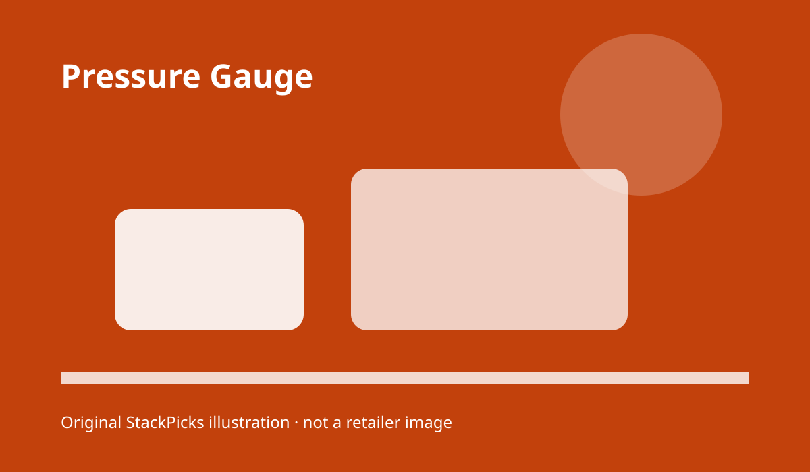
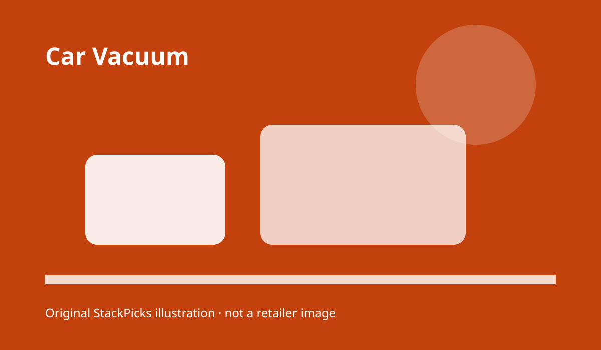

DIY car care and detailing · 2026 guide
DIY car care that starts with the right tools—not a shelf full of bottles.
If you are new to detailing, the hard part is not finding products. It is choosing a small, compatible kit that helps you clean safely, inflate a tire, and restore the details you can actually see. We built this guide around a beginner’s driveway workflow: wash, dry, interior, wheels, and emergency air.
How to shop
Check this before treating a listing as a fit.
Check this before treating a listing as a fit.
Check this before treating a listing as a fit.
Check this before treating a listing as a fit.
Check this before treating a listing as a fit.
Our shortlist
The picks, by buyer type
There is no universal winner. The best first choice depends on the constraint you are solving. Every link below goes to Amazon; price, availability, ratings, and seller information are intentionally left to the live listing rather than typed here.
tire inflator
AstroAI AIRUN H portable tire inflator
Best for a compact emergency-and-detailing kit
Why it belongs: Battery-free 12V power keeps the tool simple to store in the car.
Choose it when
Battery-free 12V power keeps the tool simple to store in the car.
Battery-free 12V power keeps the tool simple to store in the car.
Watch the limit
The corded format is less convenient away from a vehicle.
The corded format is less convenient away from a vehicle.
Current price and availability: check the live Amazon listing.
Check price at Amazon(paid link) · price and availability change; verify on Amazon
headlight restoration
CERAKOTE Ceramic Headlight Restoration Kit
Best for visibly cloudy headlights
Why it belongs: A focused restoration kit is easier to follow than assembling abrasives separately.
Choose it when
A focused restoration kit is easier to follow than assembling abrasives separately.
A focused restoration kit is easier to follow than assembling abrasives separately.
Watch the limit
Restoration quality depends on preparation and even application.
Restoration quality depends on preparation and even application.
Current price and availability: check the live Amazon listing.
Check price at Amazon(paid link) · price and availability change; verify on Amazon
interior cleaner
Chemical Guys Total Interior Cleaner
Best for a one-bottle interior starting point
Why it belongs: A general interior cleaner keeps the beginner workflow short.
Choose it when
A general interior cleaner keeps the beginner workflow short.
A general interior cleaner keeps the beginner workflow short.
Watch the limit
A single cleaner is not a substitute for material-specific testing.
A single cleaner is not a substitute for material-specific testing.
Current price and availability: check the live Amazon listing.
Check price at Amazon(paid link) · price and availability change; verify on Amazon

pressure gauge
AstroAI digital tire pressure gauge with inflator
Best for repeatable tire checks
Why it belongs: A gauge plus inflator reduces the number of tools needed for routine checks.
Choose it when
A gauge plus inflator reduces the number of tools needed for routine checks.
A gauge plus inflator reduces the number of tools needed for routine checks.
Watch the limit
Digital tools still need a stable valve connection and a charged display.
Digital tools still need a stable valve connection and a charged display.
Current price and availability: check the live Amazon listing.
Check price at Amazon(paid link) · price and availability change; verify on Amazon

car vacuum
KMM handheld car vacuum and air duster
Best for crumbs and tight cabin gaps
Why it belongs: A small vacuum is useful for seats, consoles, and vents before wiping.
Choose it when
A small vacuum is useful for seats, consoles, and vents before wiping.
A small vacuum is useful for seats, consoles, and vents before wiping.
Watch the limit
Compact tools trade capacity for easier storage.
Compact tools trade capacity for easier storage.
Current price and availability: check the live Amazon listing.
Check price at Amazon(paid link) · price and availability change; verify on Amazon
Quick comparison
| Buyer type | Pick | Decision check | Live price |
|---|---|---|---|
| Best for a compact emergency-and-detailing kit | AstroAI AIRUN H portable tire inflator | Product fit, dimensions, and live availability | Check price at Amazon |
| Best for visibly cloudy headlights | CERAKOTE Ceramic Headlight Restoration Kit | Product fit, dimensions, and live availability | Check price at Amazon |
| Best for a one-bottle interior starting point | Chemical Guys Total Interior Cleaner | Product fit, dimensions, and live availability | Check price at Amazon |
| Best for repeatable tire checks | AstroAI digital tire pressure gauge with inflator | Product fit, dimensions, and live availability | Check price at Amazon |
| Best for crumbs and tight cabin gaps | KMM handheld car vacuum and air duster | Product fit, dimensions, and live availability | Check price at Amazon |
How we picked
We organized the shortlist around a repeatable driveway sequence. First remove loose debris, then work from cleaner surfaces to dirtier ones, keep wheel tools separate from paint tools, and finish with tire pressure. We did not hands-on test these products; product-specific details are limited to the dated public listing evidence supplied for this build.
Our method is source-based, not hands-on testing. The product set came from the dated research brief; recheck the live listing before purchase. We do not hand-type Amazon prices, ratings, review counts, or availability.
FAQ
Can I use one towel everywhere?
No. Keep separate towels for paint, glass, wheels, and interior work so grit and product residue do not travel.
Should I start with a pressure washer?
No. A beginner kit can start with hand tools and a hose. Add equipment only after the workflow is repeatable.
What is the first purchase?
Choose the tool that fixes your most immediate constraint: tire inflation, interior debris, cloudy headlights, or a complete wash routine.
How often should I check tire pressure?
Use the vehicle maker’s recommended interval and check when tires are cold; the correct number is vehicle-specific.
Are these products hands-on tested?
No. The shortlist is source-based and dated; we do not present public ratings or listing facts as personal testing.
Also considered
We excluded generic category roundups, products without a clear role in the workflow, and any listing fact that could not be rechecked. We would rather narrow the set than fill a comparison table with invented certainty.
Sources: Amazon best-seller research captured September 11, 2026; Amazon live listing links above; Amazon Associates disclosure and link rules. Research boundary: no hands-on product testing.